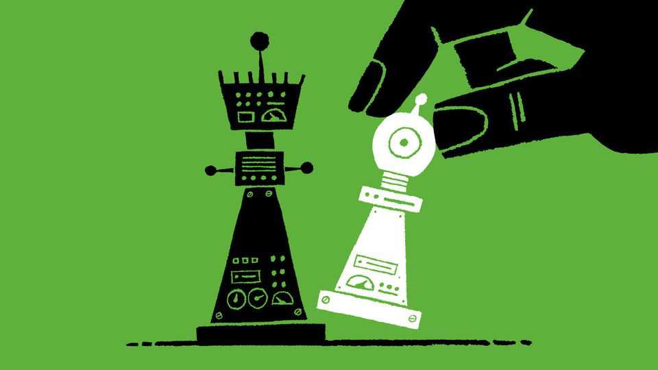

How personal rivalries and clashes are shaping the AI race
A new book offers a rollicking tale of the people shaping Silicon Valley’s new obsession

Oct 22nd 2026
To someone who has not witnessed the AI scene in California’s Bay Area, it is hard to convey how utterly weird it is. The Curve, a recent conference, hosted sessions including “What’s the plan for keeping robots under control?” and “The Neural Frontier: what happens when AI can read your mind?” People lounged on couches and in gazebos with cold brews and kombuchas discussing how AI company staff made obscenely rich by forthcoming public offerings should channel their philanthropic giving—even as some of them conspired to hobble their own employers to delay civilisational upheaval.
The goal of Kevin Roose, a former reporter for the New York Times, was not to write a grand treatise on what AI means for the world but merely to record this weirdness before it was lost to the vagaries of memory, disappearing message threads and obsolete media-storage formats. In “The AGI Chronicles” his focus is the nine years since Google researchers developed the transformer, the type of AI model that underlies ChatGPT and all its kin. Quickly the idea took hold that, given enough data and computing power, transformer-based systems would eventually attain the holy grail: a truly “general” AI, or AGI, matching human smarts and then outstripping them.
That doctrine has been the driving force of AI research ever since. And so its history in the West mostly boils down to the interwoven fates of a handful of brilliant, prickly people raising ever more money, panicking each time they get leapfrogged by rivals and splitting off in a blaze of acrimony to start their own firms.
In outline, much of the story will be familiar. But Mr Roose captures the madness in a fast-paced style. His account is filled with gossipy anecdotes that highlight just how much the ambitions, ideological divides and personality clashes of a group small enough to fit in a couple of classrooms have shaped what may turn out to be the most consequential technology in modern history. As Mr Roose puts it, AGI is a “quest that half my sources thought was going to save the world, and the other half thought was going to end it”.
Consider Dario Amodei, who early in his tenure at OpenAI proposed the doctrine that more data and more compute equals more intelligence. He eventually left to form Anthropic, in part because he thought OpenAI was reneging on its original commitment to build AI safely, and in part because he considered Greg Brockman, OpenAI’s president, “a bully, a credit hog, and a cut-throat capitalist”, in Mr Roose’s words. Mr Brockman, in turn, thought Mr Amodei was a “paranoid control freak who used safety as a pretext to win arguments”.
For years, AGI was seen as the prize in an all-or-nothing contest to whose winner all power in the world would accrue. But as the goal approached, definitions multiplied to the point where the term has lost all meaning. At some point in 2025, Mr Roose noticed a shift in rhetoric. There would never be a finish line, only an endless arms race. By then, some researchers were starting to be terrified by their creations’ power—but “they kept accelerating, because they had forgotten how to do anything else.”
Meanwhile, Mr Roose provocatively argues that AGI has, in fact, quietly arrived. A few dollars now buys you some time with an intelligence that is tolerably good at a growing number of things and extraordinary at a few; not human-level (yet), but already pretty general.
Perhaps that is why hardly anybody mentioned “AGI” at The Curve. The talk was of “extremely powerful AI” and “advanced superintelligence”. The names and goalposts change, the relentless pursuit of computing capability continues, and with it the efforts of a small group of people, alternately elated and horrified at the creation taking shape before them. ■